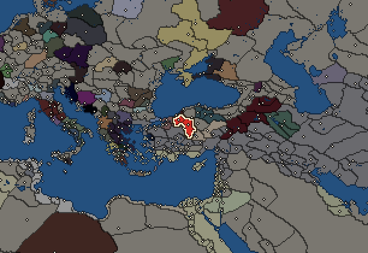
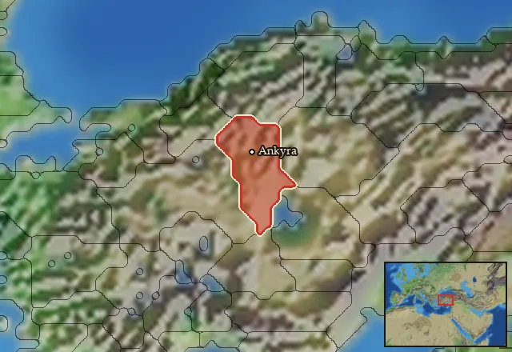

RTR: Imperium Surrectum
RTR: Imperium SurrectumGalatians


- difficulty Difficult
- Gallic culture
- believes
 Celtic
Celtic - 2 settlements
- capital Ankyra
- 7,400 manpower
- 3 characters
- 21 faction units
- 431 regional units
The campaign brief
"The Celts rushed at their enemies like wild beasts, full of rage and temperament, with no kind of reasoning at all, and the blind fury never left them while there was breath in their bodies; even with arrows and javelins sticking through them they were carried on by sheer spirit while their life lasted." – Pausanias
At the camp fires, the elders often tell us the stories of the migrations of the Celtic people as they spread over the known world and took their rightful place among the peoples of the Mediterranean. Our oldest ancestors lived a simple and free life on the banks of the great rivers Rhine and Danube. From there, however, large groups of men, women, and children moved to seek new land when they outgrew their small and narrow home countries. Some of these great migrations ended in peaceful settlements of new lands, but in other cases the incoming tribes had to conquer their new homes by sword.
Our tribesmen are the superiors of all others in bravery, sword-skill and weaponry, and thus secured fertile lands to call our own. The stories of these events have been passed down the generations by oral tradition, whilst our common language still bonds us with our Celtic brethren who live far away in our ancient homeland. In the course of time, we colonised vast areas in the North and the West, and only a few hundred moons ago we began to push into the rich world of the Greeks. There we were called "Barbarians" because they could not understand our language. Yet, soon we had taught them fear and became the nightmare of the entire Hellenic world.
Only Alexander the Great, a mighty king from the northern upland of Macedon, stopped our ancestors from moving further south. His successors continued this for a further two generations before several tens of thousands of warriors invaded Hellas under the powerful Brennus and instilled the Greek civilisation with fear. The impetuous Ptolemaios Keraunos, who vainly styled himself successor of the great Alexander, was thrown off the ferocious beast he tried to ride but that he controlled even worse than he could lead his army. The fool was captured and slain by the great Bolgios, who carried his head around the battlefield on a spear! The Hellenes, however, were eventually able to defeat our ancestors in an insidious and honourless way, and so divided the hordes of the Celts. Some settled down in rough Thrace, where they founded the empire of Tylis, which has incessantly tormented the Greek cities on the Black Sea with their raids ever since.
Our fathers, however, were admitted into the service of wealthy kings from the countries beyond the sea of Byzantion, and happily joined in the wars for power in the eastern empires that led to much further bloodshed among these scheming Greeks. Now, we have a new future for our great people in the heart of the region that is called Asia – or used to be described that way by the Greeks who lived here before we made them our slaves! From Ankyra, our new capital, we Galatians plundered the rich cities of this land that we will make our own. We will surely continue to be recruited as mercenaries by the tyrant leaders of our weak neighbours, as our ferocity and prowess in battle remain second to none! Our men live in contempt of death, and thus nothing can stop them – they may hate us, as long as they rightfully fear us!
Starting settlements
Galatians begins with 2 settlements and 7,400 manpower.
| Settlement | Region | Size | Manpower | Already built | Settlement | Region | Size | Manpower | Already built |
|---|---|---|---|---|---|---|---|---|---|
| Ankyra (capital) | Tektosagia | town | 3,700 | 4 buildings | Bithynion | Salone | town | 3,700 | 4 buildings |
What is already built in each settlement
Ankyra, in Tektosagia: Governor's House, Homeland, Region Information Scroll, Training Grounds
Bithynion, in Salone: Governor's House, Homeland, Region Information Scroll, Training Grounds
Homeland
Galatians's homeland is 1 region. Only there can it install the Homeland government (more on homelands).

Starting diplomacy
Allied with (2):  Bithynia ·
Bithynia ·  Tylis
Tylis
Trade agreements with (2):  Bithynia ·
Bithynia ·  Tylis
Tylis
At war with (3):  Antigonid Kingdom ·
Antigonid Kingdom ·  Odrysian Kingdom ·
Odrysian Kingdom ·  Pergamon
Pergamon
Like every faction, it is also at war with the  Free Peoples, who hold every settlement no faction does.
Free Peoples, who hold every settlement no faction does.
Starting characters
| Name | Role | Age | Name | Role | Age | Name | Role | Age | |||
|---|---|---|---|---|---|---|---|---|---|---|---|
| Lutarios | General | 46 | Leonnorios | General | 44 | Kichorios | General | 30 |
Faction mechanics
From the game's own guide. See also the other game guides.
Special Mechanics
The Galatians have a mercenary centre in Ankyra, check its Region Information Building for more details.
Units you can recruit
The same as in the main campaign.
Reforms
For every faction: Military innovations have arrived!, Second wave of military innovations have arrived!.